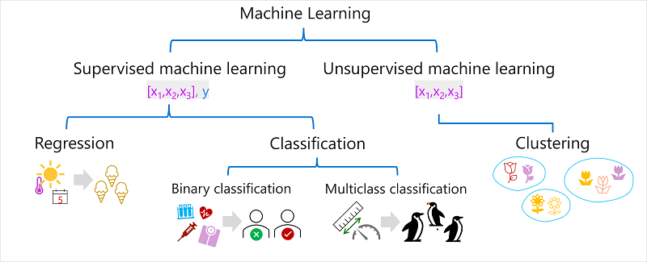
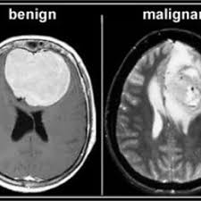
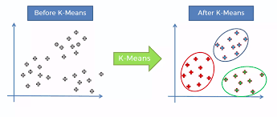

Exploring the Basics of Machine Learning
What if machines could learn from their experiences just like humans do? Could they get smarter over time without being explicitly programmed? Let's explore how Machine Learning makes this possible.
Machine Learning (ML) is a key subset of Artificial Intelligence (AI), which enables machines to mimic human intelligence. Just as the human brain perceives the world, processes information, makes decisions, and takes actions based on situations, AI aims to replicate this behavior in machines.
Machine Learning (ML) is about creating systems that can learn from data and make intelligent decisions or predictions. Instead of just using data to estimate values, ML focuses on finding patterns in the data and generalizing them to make future predictions.
For example, imagine you have temperature data for a few days—Day 1: 25°C, Day 2: 23°C, and Day 3: 24°C. Using this data, an ML system can predict the temperature on Day 4. The key idea is that the system doesn't just look at specific values, but learns from the trends to make predictions about future events. The key idea is that ML focuses on learning trends and relationships in data, which can then be applied to new, unseen situations.

Understanding the Types of ML
Machine Learning can be categorized into three main types, each focusing on how data is used to train a model and make predictions.
1. Supervised Learning
In supervised learning, the algorithm is provided with a dataset where each input has a corresponding correct output (a label). The goal is for the model to learn the relationship between inputs and outputs so that it can predict the output for new, unseen data.
The dataset can be represented as a set of pairs: D = {(X1, Y1), (X2, Y2), ..., (Xn, Yn)}, where x is an input feature and y is the corresponding label or output. The model learns a mapping function f(x) that maps inputs to their correct outputs.
So, the idea is that we want to basically learn mapping and learn some kind of relationship so that in the future when we are given an x, we can predict the y.
Example: Predicting Brain Tumor Type (Benign or Malignant)
Let's consider a real-world scenario where the goal is to predict whether a brain tumor is benign (non-cancerous) or malignant (cancerous) using MRI images. In this case:
- The inputs (X) are the features derived from MRI images.
- The outputs (Y) are the corresponding labels, which are benign or malignant tumor types.
In supervised learning, we train a model using a dataset where each MRI image already has a known label (benign or malignant). The algorithm's job is to learn the relationship between the image features (inputs) and the tumor type (output). The aim is for the model to generalize this relationship and make accurate predictions when given new, unseen MRI images.
How it works
Training the model:
- The model is fed MRI images along with the correct tumor labels (benign or malignant).
- Over time, the model learns to recognize patterns within the images that correlate with the tumor's characteristics.

Making predictions:
- Once the model has been trained, it can predict whether a new MRI image shows a benign or malignant tumor by analyzing the image features (such as textures or pixel patterns) and output a prediction of whether the tumor is benign or malignant, based on the patterns it learned during training. This problem is also known as a binary classification problem because there are only two possible outcomes—benign or malignant.
2. Unsupervised Learning
Unsupervised learning doesn't involve learning a function from input to output based on a set of input-output pairs instead, we are just given a dataset and we are expected to find some patterns and structure in it.
For example, imagine you have a collection of customer data, including age, income, and spending habits. Without any labeled data telling you which customers belong to which category, unsupervised learning can help group similar customers into clusters, which means here the algorithm works with data without a labeled output ("no answers"), and instead of predicting something it tries to find patterns, structures, or grouping in the data.

To see K-Means Clustering in action, take a look at my project on Customer Segmentation using K-Means [Project link].
Key Goals of Unsupervised Learning
- Clustering: Group similar points together, such as customer segmentation using the K-means clustering Algorithm
- Dimensionality Reduction: which refers to simplifying data while retaining essential information, such as Reducing feature in a dataset from 20 to 10 feature by using Algorithm such as (PCA).
Unsupervised learning finds applications in various real-world scenarios where labeled data is unavailable. such as In finance, anomaly detection helps banks identify fraudulent transactions by spotting unusual patterns. Streaming platforms like Netflix rely on unsupervised learning to suggest content based on viewing habits, while search engines use it for document clustering, organizing similar articles for efficient retrieval. These diverse applications highlight the power of unsupervised learning in making sense of unstructured data.
3. Reinforcement Learning
The goal is to learn a mapping from input values X to output values Y but without a direct supervision signal to specify which output values are best for a particular input. There is no "Training Set", and the learning problem is framed as an agent interacting in an environment. The agent takes action, receives feedback in the form of rewards or penalties, and adjusts its behavior accordingly to maximize the long-term reward. The goal is to find a mapping from X to Y which maximizes reward.
A classic example of this is AI playing chess. In this scenario, the agent (AI) learns to make decisions about which moves to make in a game of chess. The environment consists of the chessboard and the game rules. Each move made by the AI is an action, and the state is the current arrangement of pieces on the board. After each move, the AI receives feedback in the form of a reward (such as winning the game) or punishment (such as losing a piece). Over time, the AI improves its strategy by learning from these rewards, becoming better at predicting the best moves to make and ultimately mastering the game.
Let's consider a self-driving car navigating through a city:
- Agent: The self-driving car is the agent making decisions.
- Environment: The city streets, including traffic lights, pedestrians, and other vehicles, form the environment.
- Actions: The car's actions include accelerating, braking, turning, or stopping.
- States: The current conditions of the environment, such as the car's speed, position, proximity to other vehicles, and traffic signals.
- Rewards: Positive rewards are given for actions like obeying traffic signals, maintaining safe distances, and reaching destinations efficiently. Negative rewards (penalties) occur for actions like running red lights or causing accidents.
- Policy: The car's strategy is the policy, determining the best action (e.g., stop or go) based on its current state (e.g., approaching a red light).
- Value Function: The value function evaluates how good a particular state is by estimating the expected rewards over the long term, such as staying on a clear road versus entering a congested area.
This example demonstrates how reinforcement learning concepts apply to real-world scenarios like autonomous driving.
In summary, the three types of Machine Learning—supervised learning, unsupervised learning, and reinforcement learning—each have their own unique approach to solving problems. Supervised learning works best when we have labeled data and want to make predictions. Unsupervised learning is useful when we don't have labels, allowing us to find patterns or groupings in data. Reinforcement learning is all about learning from experience, where an agent takes actions and gets feedback. By understanding these methods, we can choose the right one for different real-world challenges and make better decisions in AI projects.
6 steps of any ML Model
As we went through ml and its type now its time to see what steps are taken in the process of any ML model.
- Get Data: The first step is collecting the right data for your problem. This can come from different sources, like databases, sensors, or the web.
- Think of Possible Solutions: Once you have the data, you need to generate hypotheses or ideas on what the best solution might look like. This involves thinking about how the data might relate to the problem you're trying to solve.
- Characterize a Good Solution: You need to figure out what makes a good solution. This could mean setting up a way to measure the success of your model, such as aiming for a small error in predictions when new data comes in.
- Find the Right Algorithm: Choose the algorithm that will best fit your problem. This could be a supervised, unsupervised, or reinforcement learning model, depending on your data and goal.
- Run the Algorithm: Now, run the chosen algorithm on your data to train the model. This step helps the model learn from the data and adjust its parameters.
- Validate the Results: After running the algorithm, you need to validate how well the model works by testing it on new data. This helps ensure that the model generalizes well and makes accurate predictions.
Many people view Machine Learning as a "magic box" that takes data and instantly provides the desired output. But in reality, it's not that simple. While the algorithm (step 5) is important, humans are involved in most of the process. From gathering data and figuring out the best approach, to choosing the right algorithm and checking the results, humans guide the entire process. The algorithm is just one part, and the success of an ML model depends on the steps humans take along the way.
In the upcoming blog, I'll walk through the process of applying my first algorithm, following the six essential steps—from gathering data to running the algorithm and validating the results. This will provide a practical understanding of how Machine Learning models are built and refined, and how the theory connects with real-world applications